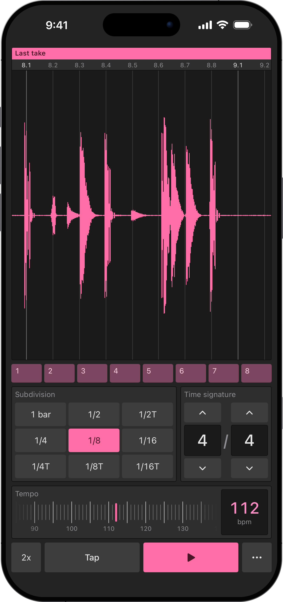
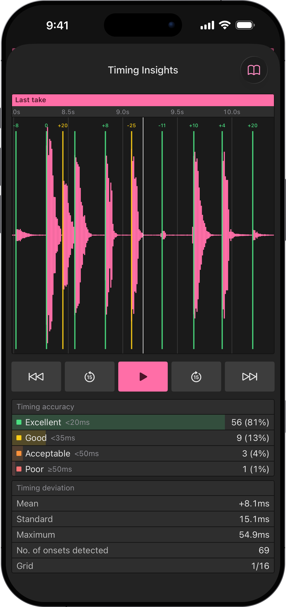
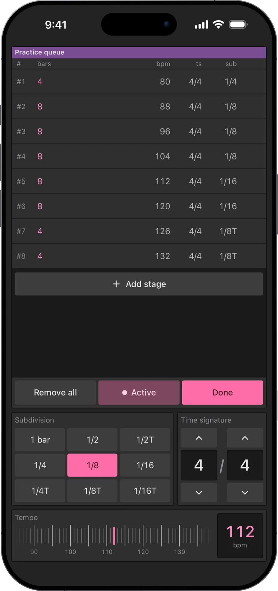
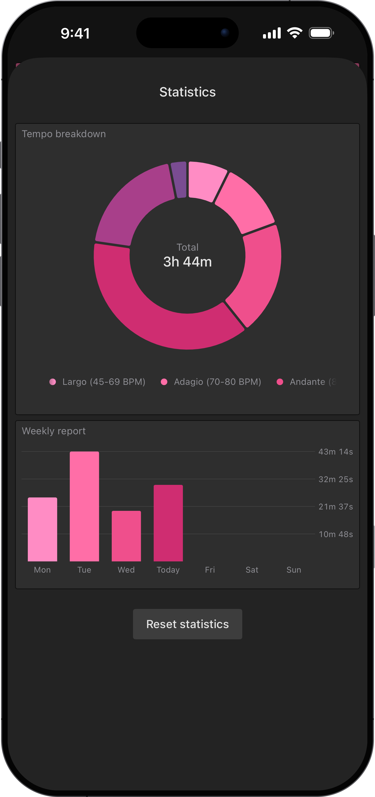
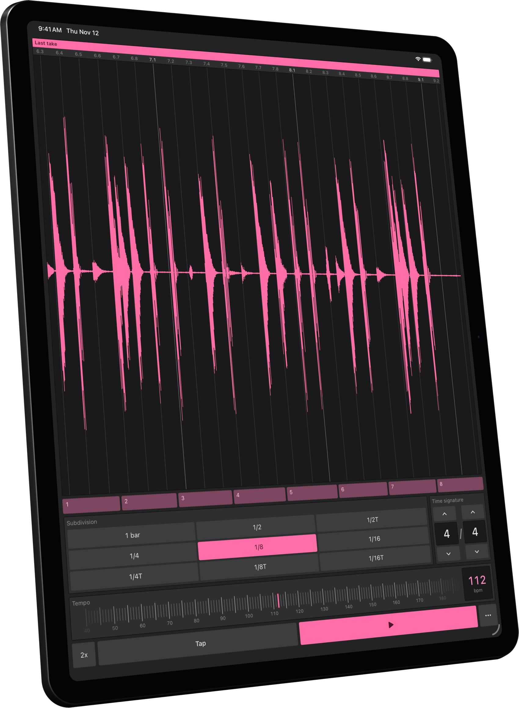

Metronome
reimagined
Play along to the click and watch your take land on the beat grid, note by note. Then see how tight it was, in milliseconds.
For iPhone, iPad and Apple Watch
Waveform feedback that shows your timing in real time
Beet draws what the microphone hears right on the beat grid. Every note shows up where you played it: ahead of the beat, behind it, or dead on.
- Input
- Live waveform as you play
- Last take
- Stays on screen for review
- Audio
- Analyzed on your device

Stay in the groove with effortless controls
Everything sits on one screen, one touch away. Pick a subdivision, step the time signature, drag the tempo ruler, or just tap the tempo in.
- 1 bar
- 1/2
- 1/2T
- 1/4
- 1/8
- 1/16
- 1/4T
- 1/8T
- 1/16T
- Tempo
- 40–300 bpm
Advanced timing analysis measured beat by beat
Timing Insights finds every note in your take and measures how far it is from the nearest spot on the grid, straight or triplet, in milliseconds.
- Excellent
- under 20 ms
- Good
- under 35 ms
- Acceptable
- under 50 ms
- Poor
- 50 ms or more

Build practice queues to automate your session
Split a session into stages, each with its own length, tempo, time signature and subdivision. Press play and Beet moves from one stage to the next on its own.
- Bars
- 8
- Tempo
- 112 bpm
- Time signature
- 4/4
- Subdivision
- 1/16

Monitor your progress over time with charts
Beet keeps track of how long you practice and how fast. See your total time split by tempo, and how much you played on each day of the week.
- Tempo breakdown
- Lento to Prestissimo
- Weekly report
- Day by day


A metronome that listens
Beet is on the App Store for iPhone, iPad and Apple Watch, in English and Spanish.